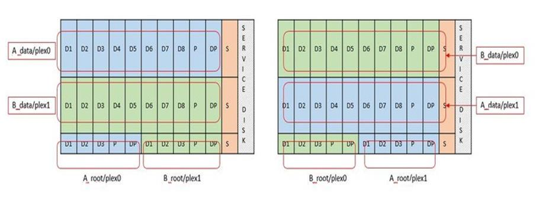

Versionshinweise
Versionshinweise
Software-RAID-Services für lokalen Attached Storage
 Änderungen vorschlagen
Änderungen vorschlagen
Software-RAID ist eine RAID-Abstraktionsschicht, die im ONTAP Software-Stack implementiert ist. Die Lösung bietet dieselben Funktionen wie die RAID-Ebene in einer herkömmlichen ONTAP Plattform wie FAS. Die RAID-Schicht berechnet für die Laufwerksparität und bietet Schutz vor einzelnen Laufwerksausfällen innerhalb eines ONTAP Select Node.
Unabhängig von den Hardware-RAID-Konfigurationen bietet ONTAP Select auch Software-RAID-Option. Ein Hardware-RAID-Controller ist möglicherweise nicht verfügbar oder in bestimmten Umgebungen möglicherweise nicht wünschenswert, beispielsweise wenn ONTAP Select auf einer Small Form-Factor-Standardhardware implementiert wird. Software RAID erweitert die verfügbaren Implementierungsoptionen auf solche Umgebungen. Um Software-RAID in Ihrer Umgebung zu aktivieren, sollten Sie sich hier einige Punkte merken:
-
Es ist mit einer Premium- oder Premium XL-Lizenz erhältlich.
-
Es unterstützt nur SSD- oder NVMe-Laufwerke (erfordert eine Premium-XL-Lizenz) für ONTAP Root- und Datenfestplatten.
-
Für die ONTAP Select VM Boot-Partition ist eine separate Systemfestplatte erforderlich.
-
Wählen Sie ein separates Laufwerk, entweder ein SSD- oder ein NVMe-Laufwerk, um einen Datastore für die Systemfestplatten zu erstellen (NVRAM, Boot/CF-Karte, Coredump und Mediator in einem Multi-Node-Setup).
-
Hinweise
-
Die Begriffe Service-Festplatte und Systemfestplatte werden synonym verwendet.
-
Service-Festplatten sind die VMDKs, die in der ONTAP Select-VM zur Wartung verschiedener Elemente wie Clustering, Booten usw. verwendet werden.
-
Service-Festplatten befinden sich physisch auf einer einzelnen physischen Festplatte (zusammen als Service-/physische Systemfestplatte bezeichnet), wie vom Host aus gesehen. Diese physische Festplatte muss einen das-Datenspeicher enthalten. ONTAP Deploy erstellt diese Service-Festplatten für die ONTAP Select-VM während der Cluster-Implementierung.
-
-
Die ONTAP Select Systemfestplatten können nicht weiter in mehrere Datastores oder über mehrere physische Laufwerke hinweg getrennt werden.
-
Hardware-RAID ist nicht veraltet.
Software-RAID-Konfiguration für lokalen angeschlossenen Speicher
Bei der Verwendung von Software-RAID ist das Fehlen eines Hardware-RAID-Controllers ideal, aber wenn ein System über einen vorhandenen RAID-Controller verfügt, muss es die folgenden Anforderungen erfüllen:
-
Der Hardware-RAID-Controller muss deaktiviert werden, damit Laufwerke direkt dem System (A JBOD) zur Verfügung gestellt werden können. Diese Änderung kann in der Regel im RAID-Controller-BIOS vorgenommen werden
-
Oder der Hardware-RAID-Controller sollte sich im SAS HBA-Modus befinden. Einige BIOS-Konfigurationen ermöglichen beispielsweise neben RAID einen „AHCI“-Modus, der gewählt werden kann, um den JBOD-Modus zu aktivieren. Dies ermöglicht ein Passthrough, so dass die physischen Laufwerke so gesehen werden können, wie sie auf dem Host vorhanden sind.
Je nach der maximalen Anzahl von Laufwerken, die vom Controller unterstützt werden, ist möglicherweise ein zusätzlicher Controller erforderlich. Stellen Sie beim SAS HBA-Modus sicher, dass der IO Controller (SAS HBA) mit einer Geschwindigkeit von mindestens 6 GB/s unterstützt wird. NetApp empfiehlt jedoch eine Geschwindigkeit von 12 Gbit/s.
Es werden keine anderen Hardware-RAID-Controller-Modi oder -Konfigurationen unterstützt. Einige Controller ermöglichen beispielsweise eine RAID-0-Unterstützung, die Festplatten künstlich ermöglichen kann, sie zu durchlaufen, aber die Auswirkungen können unerwünscht sein. Die unterstützte Größe von physischen Festplatten (nur SSD) liegt zwischen 200 GB und 16 TB.

|
Administratoren müssen nachverfolgen, welche Laufwerke von der ONTAP Select VM verwendet werden, und vermeiden die unbeabsichtigte Nutzung der Laufwerke auf dem Host. |
Virtuelle und physische ONTAP Select-Festplatten
Bei Konfigurationen mit Hardware-RAID-Controllern wird die Redundanz physischer Festplatten durch den RAID-Controller gegeben. ONTAP Select wird mit einer oder mehreren VMDKs präsentiert, von denen der ONTAP Administrator Datenaggregate konfigurieren kann. Diese VMDKs werden im RAID 0-Format verteilt, da ONTAP Software RAID aufgrund der Ausfallsicherheit auf Hardware-Ebene redundant, ineffizient und ineffektiv ist. Darüber hinaus befinden sich die für Systemfestplatten verwendeten VMDKs im selben Datenspeicher wie die VMDKs, die zum Speichern von Benutzerdaten verwendet werden.
Bei Verwendung von Software-RAID stellt ONTAP Deploy ONTAP Select mit einer Reihe von virtuellen Festplatten (VMDKs) und physischen Festplatten Raw Device Mapping [RDMs] für SSDs und Passthrough- oder DirectPath I/O-Geräte für NVMes dar.
Die folgenden Abbildungen zeigen diese Beziehung detaillierter, wobei der Unterschied zwischen den virtualisierten Festplatten für die inneren Komponenten von ONTAP Select VMs und den physischen Festplatten zum Speichern von Benutzerdaten hervorgehoben wird.
ONTAP Select Software RAID: Einsatz von virtualisierten Festplatten und RDMs

Die Systemfestplatten (VMDKs) befinden sich im selben Datenspeicher und auf derselben physischen Festplatte. Die virtuelle NVRAM-Festplatte benötigt ein schnelles und langlebiges Medium. Daher werden nur NVMe und SSD-Datastores unterstützt.

Die Systemfestplatten (VMDKs) befinden sich im selben Datenspeicher und auf derselben physischen Festplatte. Die virtuelle NVRAM-Festplatte benötigt ein schnelles und langlebiges Medium. Daher werden nur NVMe und SSD-Datastores unterstützt. Bei der Nutzung von NVMe-Laufwerken zu Daten sollte die Systemfestplatte auch aus Performance-Gründen ein NVMe-Gerät sein. Ein guter Kandidat für die Systemfestplatte in einer gesamten NVMe-Konfiguration ist eine INTEL Optane-Karte.
|
|
Mit der aktuellen Version können ONTAP Select Systemfestplatten nicht weiter in mehrere Datastores oder mehrere physische Laufwerke getrennt werden. |
Jede Datenfestplatte ist in drei Teile aufgeteilt: Eine kleine Root-Partition (Stripe) und zwei Partitionen mit gleicher Größe, bei der innerhalb der ONTAP Select-VM zwei Datenfestplatten erstellt werden. Partitionen verwenden das Root Data Data (RD2)-Schema wie in den folgenden Abbildungen für ein Single-Node-Cluster und für einen Node in einem HA-Paar dargestellt.
P Bezeichnet ein Paritätslaufwerk. DP Bezeichnet ein Dual-Parity-Laufwerk und S Bezeichnet ein Ersatzlaufwerk.
RDD-Festplattenpartitionierung für Single-Node-Cluster

RDD-Festplattenpartitionierung für Multinode-Cluster (HA-Paare)

ONTAP RAID Software unterstützt die folgenden RAID-Typen: RAID 4, RAID-DP und RAID-TEC. Dies sind die gleichen RAID-Konstrukte, die von FAS und AFF Plattformen verwendet werden. Bei der Root-Bereitstellung unterstützt ONTAP Select nur RAID 4 und RAID-DP. Bei Verwendung von RAID-TEC für das Daten-Aggregat besteht der Gesamtschutz aus RAID-DP. ONTAP Select HA verwendet eine „Shared-nothing“-Architektur, die die Konfiguration jedes Knotens auf den anderen Knoten repliziert. Das bedeutet, dass jeder Knoten seine Root-Partition und eine Kopie der Root-Partition des Peers speichern muss. Da eine Datenfestplatte über eine einzelne Root-Partition verfügt, variiert diese Mindestzahl der Datenfestplatten, je nachdem, ob der ONTAP Select-Knoten Teil eines HA-Paares ist oder nicht.
Bei Single-Node-Clustern werden alle Datenpartitionen zur Speicherung lokaler (aktiver) Daten verwendet. Bei Nodes, die Teil eines HA-Paars sind, wird eine Datenpartition verwendet, um lokale (aktive) Daten dieses Nodes zu speichern. Anschließend wird die zweite Datenpartition verwendet, um aktive Daten vom HA-Peer zu spiegeln.
Passthrough-Geräte (DirectPath IO) und RAW Device Maps (RDMs)
VMware ESX unterstützt derzeit keine NVMe-Festplatten als Raw Device Maps. Damit ONTAP Select NVMe-Festplatten direkt steuert, müssen die NVMe-Laufwerke in ESX als Passthrough-Geräte konfiguriert werden. Beachten Sie bitte, dass die Konfiguration eines NVMe Geräts als Passthrough-Geräte Unterstützung vom Server-BIOS erfordert, und dies ist ein unterbrechungsantiver Prozess, der einen Neustart des ESX-Hosts erfordert. Darüber hinaus ist die maximale Anzahl von Passthrough-Geräten pro ESX Host 16. ONTAP Deploy beschränkt dies auf 14. Dieser Grenzwert von 14 NVMe-Geräten pro ONTAP Select-Node bedeutet, dass eine rein NVMe-basierte Konfiguration eine sehr hohe IOPS-Dichte (IOPS/TB) zu Kosten der Gesamtkapazität ermöglicht. Wenn eine hochperformante Konfiguration mit höherer Storage-Kapazität gewünscht wird, empfiehlt sich alternativ die Konfiguration mit einer großen ONTAP Select-VM-Größe, einer INTEL Optane-Karte für die Systemfestplatte und einer nominalen Anzahl von SSD-Laufwerken für Storage.
|
|
Wenn Sie alle Vorteile der NVMe-Performance nutzen möchten, sollten Sie sich die Größe einer großen ONTAP Select VM genauer betrachten. |
Es gibt einen zusätzlichen Unterschied zwischen Passthrough-Geräten und RDMs. RDMs können einer laufenden VM zugeordnet werden. Für Passthrough-Geräte ist ein Neustart der VM erforderlich. Das heißt, dass bei jedem Austausch eines NVMe Laufwerks oder bei jeder Kapazitätserweiterung (Laufwerk hinzugefügt) ein Neustart der ONTAP Select VM erforderlich ist. Der Austausch von Laufwerken und die Kapazitätserweiterung (Hinzufügen von Laufwerken) werden durch einen Workflow bei ONTAP Deploy gesteuert. ONTAP Deploy managt den ONTAP Select-Neustart für Single Node Cluster und Failover/Failback für HA-Paare. Es ist jedoch wichtig, den Unterschied zwischen der Arbeit mit SSD-Daten-Laufwerken zu beachten (kein ONTAP Select-Neustart / Failover ist erforderlich) und der Arbeit mit NVMe-Datenlaufwerken (ONTAP Select-Neustart / Failover ist erforderlich).
Bereitstellung physischer und virtueller Festplatten
Um eine effizientere Benutzererfahrung zu ermöglichen, stellt ONTAP Deployment automatisch die (virtuellen) Systemfestplatten vom angegebenen Datenspeicher (physische Systemfestplatte) bereit und wird an die ONTAP Select VM angeschlossen. Dieser Vorgang läuft automatisch während der Ersteinrichtung ab, sodass die ONTAP Select VM gebootet werden kann. Die RDMs werden partitioniert und das Root-Aggregat wird automatisch erstellt. Wenn der ONTAP Select Node Teil eines HA-Paars ist, werden die Datenpartitionen automatisch einem lokalen Storage-Pool und einem gespiegelten Storage-Pool zugewiesen. Diese Zuweisung erfolgt automatisch sowohl bei der Cluster-Erstellung als auch beim Storage-Hinzufügen.
Da die Datenfestplatten auf der ONTAP Select VM mit den zugrunde liegenden physischen Festplatten verknüpft sind, hat dies Auswirkungen auf die Performance, wenn Konfigurationen mit einer größeren Anzahl physischer Festplatten erstellt werden.
|
|
Der RAID-Gruppen-Typ des Root-Aggregats hängt von der Anzahl der verfügbaren Festplatten ab. ONTAP Deploy wählt den entsprechenden RAID-Gruppen-Typ aus. Wenn dem Knoten genügend Festplatten zugewiesen sind, verwendet er RAID-DP, sonst erstellt es ein RAID-4-Root-Aggregat. |
Wenn einer ONTAP Select VM mit Software-RAID Kapazität hinzugefügt wird, muss der Administrator die physische Laufwerkgröße und die Anzahl der erforderlichen Laufwerke berücksichtigen. Weitere Informationen finden Sie im Abschnitt "Erhöhung der Storage-Kapazität".
Ähnlich wie bei FAS und AFF können auch nur Laufwerke mit gleicher oder größerer Kapazität zu einer vorhandenen RAID-Gruppe hinzugefügt werden. Laufwerke mit höherer Kapazität sind von der richtigen Größe. Wenn Sie neue RAID-Gruppen erstellen, sollte die neue RAID-Gruppen-Größe der vorhandenen RAID-Gruppen-Größe entsprechen, um sicherzustellen, dass sich die Gesamt-Performance nicht verschlechtert.
Ordnen Sie eine ONTAP Select-Festplatte der entsprechenden ESX-Festplatte zu
ONTAP Select-Festplatten werden in der Regel als NET x.y. bezeichnet Sie können die Festplatten-UUID mit dem folgenden ONTAP-Befehl abrufen:
<system name>::> disk show NET-1.1 Disk: NET-1.1 Model: Micron_5100_MTFD Serial Number: 1723175C0B5E UID: *500A0751:175C0B5E*:00000000:00000000:00000000:00000000:00000000:00000000:00000000:00000000 BPS: 512 Physical Size: 894.3GB Position: shared Checksum Compatibility: advanced_zoned Aggregate: - Plex: -This UID can be matched with the device UID displayed in the ‘storage devices’ tab for the ESX host

In der ESXi-Shell können Sie den folgenden Befehl eingeben, um die LED für eine bestimmte physische Festplatte (identifiziert durch die naa.Unique-id) zu blinken.
esxcli storage core device set -d <naa_id> -l=locator -L=<seconds>
Beim Einsatz von Software-RAID treten mehrere Laufwerksausfälle auf
Es ist möglich, dass ein System eine Situation vorfindet, in der sich mehrere Laufwerke gleichzeitig in einem ausgefallenen Zustand befinden. Das Verhalten des Systems hängt vom aggregierten RAID-Schutz und der Anzahl der ausgefallenen Laufwerke ab.
Ein RAID4-Aggregat kann gegen einen Festplattenausfall überleben, ein RAID-DP Aggregat zwei Festplattenausfälle überleben, und ein RAID-TEC Aggregat kann drei Festplattenausfälle überleben.
Wenn die Anzahl fehlerhafter Festplatten unter der maximalen Anzahl von Ausfällen des RAID-Typs liegt und eine Ersatzfestplatte verfügbar ist, wird der Rekonstruktionsprozess automatisch gestartet. Wenn keine freien Festplatten verfügbar sind, stellt das Aggregat Daten im beeinträchtigten Zustand bereit, bis Ersatzfestplatten hinzugefügt werden.
Wenn die Anzahl fehlerhafter Festplatten die maximal vom RAID-Typ unterstützte Anzahl an Ausfällen beträgt, ist der lokale Plex als fehlgeschlagen markiert und der Aggregatzustand ist herabgestuft. Die Daten werden vom zweiten Plex auf dem HA Partner bedient. Das bedeutet, dass alle I/O-Anfragen für Node 1 über Cluster Interconnect Port e0e (iSCSI) an die Festplatten gesendet werden, die sich physisch auf Node 2 befinden. Wenn auch der zweite Plex fehlschlägt, ist das Aggregat als fehlgeschlagen markiert und Daten sind nicht verfügbar.
Ein fehlgeschlagener Plex muss gelöscht und neu erstellt werden, damit die Daten richtig gespiegelt werden und wieder aufgenommen werden können. Beachten Sie, dass ein Ausfall mehrerer Festplatten zur Folge hat, dass ein Datenaggregat beeinträchtigt wird. Dies führt ebenfalls zu einem Ausfall des Root-Aggregats. ONTAP Select verwendet das Root-Data-Data-Partitionierungsschema (RDD), um jedes physische Laufwerk in eine Root-Partition und zwei Datenpartitionen zu teilen. Daher kann es sich beim Verlust eines oder mehrerer Festplatten auf mehrere Aggregate auswirken, einschließlich des lokalen Root-Aggregats oder der Kopie des Remote-Root-Aggregats sowie des lokalen Datenaggregats und der Kopie des Remote-Datenaggregats.
C3111E67::> storage aggregate plex delete -aggregate aggr1 -plex plex1
Warning: Deleting plex "plex1" of mirrored aggregate "aggr1" in a non-shared HA configuration will disable its synchronous mirror protection and disable
negotiated takeover of node "sti-rx2540-335a" when aggregate "aggr1" is online.
Do you want to continue? {y|n}: y
[Job 78] Job succeeded: DONE
C3111E67::> storage aggregate mirror -aggregate aggr1
Info: Disks would be added to aggregate "aggr1" on node "sti-rx2540-335a" in the following manner:
Second Plex
RAID Group rg0, 5 disks (advanced_zoned checksum, raid_dp)
Usable Physical
Position Disk Type Size Size
---------- ------------------------- ---------- -------- --------
shared NET-3.2 SSD - -
shared NET-3.3 SSD - -
shared NET-3.4 SSD 208.4GB 208.4GB
shared NET-3.5 SSD 208.4GB 208.4GB
shared NET-3.12 SSD 208.4GB 208.4GB
Aggregate capacity available for volume use would be 526.1GB.
625.2GB would be used from capacity license.
Do you want to continue? {y|n}: y
C3111E67::> storage aggregate show-status -aggregate aggr1
Owner Node: sti-rx2540-335a
Aggregate: aggr1 (online, raid_dp, mirrored) (advanced_zoned checksums)
Plex: /aggr1/plex0 (online, normal, active, pool0)
RAID Group /aggr1/plex0/rg0 (normal, advanced_zoned checksums)
Usable Physical
Position Disk Pool Type RPM Size Size Status
-------- --------------------------- ---- ----- ------ -------- -------- ----------
shared NET-1.1 0 SSD - 205.1GB 447.1GB (normal)
shared NET-1.2 0 SSD - 205.1GB 447.1GB (normal)
shared NET-1.3 0 SSD - 205.1GB 447.1GB (normal)
shared NET-1.10 0 SSD - 205.1GB 447.1GB (normal)
shared NET-1.11 0 SSD - 205.1GB 447.1GB (normal)
Plex: /aggr1/plex3 (online, normal, active, pool1)
RAID Group /aggr1/plex3/rg0 (normal, advanced_zoned checksums)
Usable Physical
Position Disk Pool Type RPM Size Size Status
-------- --------------------------- ---- ----- ------ -------- -------- ----------
shared NET-3.2 1 SSD - 205.1GB 447.1GB (normal)
shared NET-3.3 1 SSD - 205.1GB 447.1GB (normal)
shared NET-3.4 1 SSD - 205.1GB 447.1GB (normal)
shared NET-3.5 1 SSD - 205.1GB 447.1GB (normal)
shared NET-3.12 1 SSD - 205.1GB 447.1GB (normal)
10 entries were displayed..
|
|
Um einen oder mehrere Laufwerksausfälle zu testen oder zu simulieren, verwenden Sie das storage disk fail -disk NET-x.y -immediate Befehl. Wenn es eine Reserve im System gibt, beginnt das Aggregat zu rekonstruieren. Sie können den Status der Rekonstruktion mit dem Befehl überprüfen storage aggregate show. Sie können das simulierte ausgefallene Laufwerk mithilfe von ONTAP Deploy entfernen. Beachten Sie, dass ONTAP das Laufwerk als markiert hat Broken. Das Laufwerk ist nicht beschädigt und kann mit ONTAP Deploy hinzugefügt werden. Geben Sie zum Löschen des defekten Etiketts die folgenden Befehle in der ONTAP Select-CLI ein:
|
set advanced disk unfail -disk NET-x.y -spare true disk show -broken
Die Ausgabe des letzten Befehls sollte leer sein.
Virtualisierter NVRAM
NetApp FAS Systeme verfügen üblicherweise über eine physische NVRAM PCI-Karte. Bei dieser Karte handelt es sich um eine hochperformante Karte mit nichtflüchtigem Flash-Speicher, die die Schreib-Performance erheblich steigert. Dies erfolgt durch die Gewährung von ONTAP, dass eingehende Schreibvorgänge sofort bestätigt werden können. Zudem kann die Verschiebung geänderter Datenblöcke in einem Prozess, der als Auslagerung bezeichnet wird, auf langsamere Storage-Medien geplant werden.
Herkömmliche Systeme sind in der Regel nicht mit dieser Art von Geräten ausgestattet. Daher wurde die Funktionalität der NVRAM-Karte virtualisiert und in eine Partition auf der Boot-Festplatte des ONTAP Select Systems platziert. Aus diesem Grund ist die Platzierung der virtuellen Systemfestplatte der Instanz extrem wichtig.